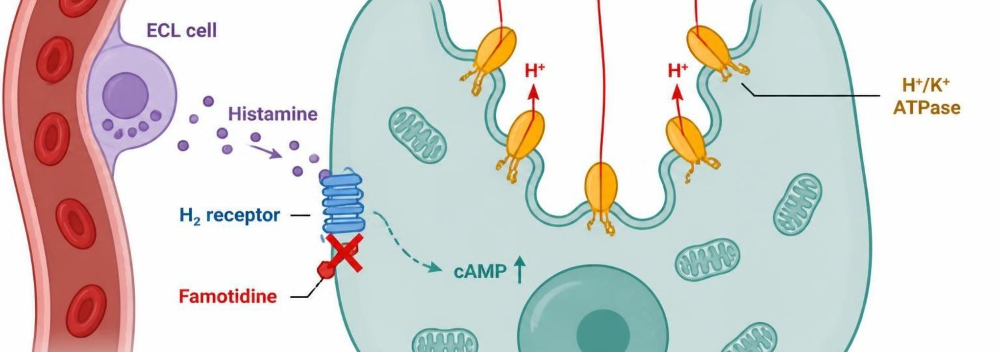
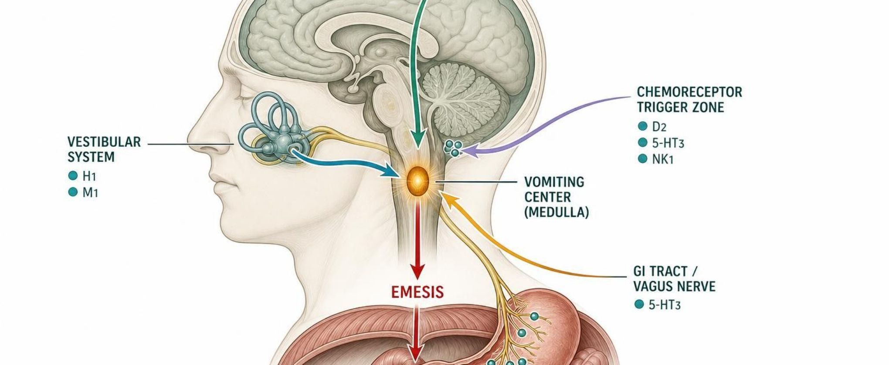
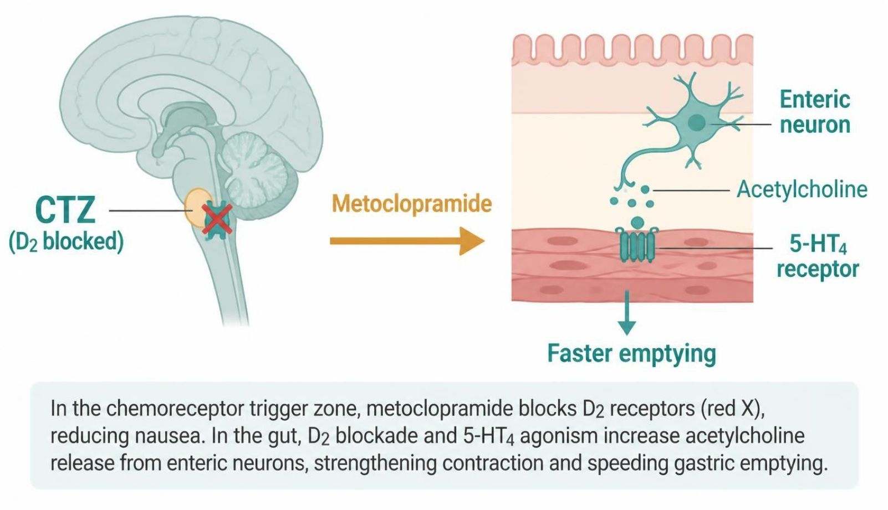

Open Sidekick (bottom right) to search, listen, drill flashcards, quiz, or chat about this lecture
The whole lecture in 6 sentences
Acid-peptic disease is a balance: acid, pepsin, H. pylori and NSAIDs push against mucus, bicarbonate, prostaglandins and epithelial turnover.S5; SG U3-R1Part 1 →
Gastrin, histamine and acetylcholine converge on the proton pump: H2 blockers cut one input, PPIs block the final common pathway, antacids neutralize acid already made.S8; S10; SG U3-R2Part 2 →
PPIs are the most potent but carry long-term risks — B12 deficiency, hypomagnesemia, fractures, C. difficile — and omeprazole blunts clopidogrel via CYP2C19.S13; SG U3-R3; SG U3-R4Part 2 →
Sucralfate shields the ulcer base (needs acid); misoprostol restores prostaglandins for NSAID-ulcer prevention but is contraindicated in pregnancy.S16; SG U3-R5Part 3 →
H. pylori needs eradication: triple therapy, or bismuth quadruple with penicillin allergy, recent macrolide, or clarithromycin resistance; test of cure ≥ 4 weeks later, off the PPI 2 weeks.S19; S21; SG U3-R6Part 3 →
Antiemetics block one input to the vomiting center: 5-HT3 (ondansetron), D2 (metoclopramide — boxed tardive dyskinesia), NK1 (aprepitant), H1/M1 (meclizine, scopolamine — motion sickness), plus CB1 (dronabinol).S24; S28; S30; SG U3-R7; SG U3-R8Part 4 →
Learning objectives
IO = syllabus unit objective · SO = this session's objectives slide.
ID
Objective
Covered in
IO3.1
Identify major pharmacologic classes used in GI and nutrition conditions and describe their mechanisms of action.
Preview: GI motility disorders, IBD pharmacotherapy, and Nutrition/Dietary Supplements continue in Session 2 (Thursday, November 5).
⚠ Preview only — taught in Session 2 (L06)
—
About this lecture
PA Pharmacology Course · Lecture 3 · Session 1 of 2 — GI & Nutrition Pharmacology. Session 1: Acid-Peptic Disease and Antiemetics (Tuesday, November 3, 8:30–11:00 AM).S1
Two pathways today: how the stomach makes acid and how we turn it down or protect the mucosa; then how the brain triggers vomiting and which receptor each antiemetic blocks.S1 (notes); S2 (notes)
Every drug today gets four answers: how it works, who it helps, what can go wrong, and what you tell the patient.S2 (notes)
Session 2 (Thursday, November 5) picks up with lower-GI motility, IBD, and nutrition/dietary supplements.S2; S2 (notes); S34
Required text: Katzung’s Basic and Clinical Pharmacology, 16th Edition (Todd W. Vanderah, 2024/2025, McGraw-Hill Education; ISBN 1260463303 eBook; AccessMedicine: accessmedicine.mhmedical.com/book.aspx?bookid=3382). Unit 3 — GI & Nutrition: Chapter 62 (Drugs Used in the Treatment of Gastrointestinal Diseases) and Chapter 65 (Dietary Supplements & Herbal Medications).S3; S3 (notes)
Recommended text (additional support, not a substitute): Pharmacotherapy Principles and Practice (Chisholm-Burns, Schwinghammer, Malone, Kolesar, Lee, 2022, McGraw-Hill Education; Print ISBN 9781260460278, eText ISBN 9781260460285) — supplemental support alongside Katzung’s Chapters 62 and 65 for Unit 3. Everything on the slides is testable.S3; S3 (notes)
Abbreviations used in the drug profiles: DR delayed-release; ER extended-release; ODT orally disintegrating tablet; OTC over the counter; PO by mouth; PR by rectum; IV intravenous; IM intramuscular; BID/TID/QID two/three/four times daily; CrCl creatinine clearance; CKD chronic kidney disease; CNS central nervous system; GERD gastroesophageal reflux disease; NSAID nonsteroidal anti-inflammatory drug; CINV chemotherapy-induced nausea and vomiting; PONV postoperative nausea and vomiting; H2 histamine-2; 5-HT3 serotonin type 3; D2 dopamine type 2; NK1 neurokinin-1; QT QT interval on ECG; CYP/P-gp cytochrome P450/P-glycoprotein; BPH benign prostatic hyperplasia; mcg microgram; m2 square meter of body surface area.S35; S35 (notes)
Original figures in this deck: Figures 1, 4 and 9 (Gastric Acid Secretion: Where Antisecretory Drugs Act; PPIs vs. H2 Receptor Antagonists: Potency and Duration; The Vomiting Reflex: Where Antiemetics Act) were generated by the course director using the AI tool Claude to illustrate standard, non-copyrighted pharmacologic concepts. They are original diagrams, not reproduced from Katzung’s Basic and Clinical Pharmacology or any other copyrighted source. Reference: Anthropic. (2026). Claude (Sonnet 5) [Large language model]. https://claude.ai. Mechanism illustrations (AI-generated, illustrative, not reproduced from copyrighted sources): H2 blocker action on the parietal cell (Figure 2, slide 14); PPI irreversible pump inhibition (Figure 3, slide 16); sucralfate and misoprostol (Figure 5, slide 21); H. pylori multidrug rationale (Figure 6, slide 24); ondansetron and 5-HT3 blockade (Figure 7, slide 31); receptors in the vomiting pathway (Figure 8, slide 32); metoclopramide D2 blockade and 5-HT4 agonism (Figure 10, slide 37); cannabinoids for chemotherapy-induced nausea (Figure 11, slide 38); cannabinoid CB1 activation (Figure 12, slide 39). Created with an AI image generator under the course director’s direction for educational use; the pictures are schematic and not to scale. Figures 2, 3, 5-8 and 10-12 are AI-generated and schematic.S62; S62 (notes)
Slide discrepancies
Triple therapy length: slides say 10–14 days (usual 14); the textbook recommends 14 days and quadruple therapy first-line where clarithromycin resistance is likely. Answer with 14 days.S19; p. 1159
Cimetidine’s CYP targets: slides list 1A2, 2C19, 3A4; the textbook lists 1A2, 2C9, 2D6, 3A4. Either way: a broad CYP inhibitor that raises warfarin, phenytoin, theophylline.S12; p. 1157
1Part 1 · Topic
Acid-Peptic Disease & Gastric Acid Secretion
SO1IO3.1
Key definitions
Acid-peptic disease is a balance between mucosal defense and acid-driven aggression.S4
Aggressive factors: gastric acid (HCl), pepsin, H. pylori infection, NSAID use (suppresses protective prostaglandins).S5; SG U3-R1
GERD: reflux of gastric contents into the esophagus, causing heartburn/regurgitation and, over time, esophageal mucosal injury.S7
Peptic ulcer disease (PUD): a break in the mucosa of the stomach or duodenum; most commonly caused by H. pylori infection or NSAID use.S7
Gastritis: inflammation of the gastric mucosa — acute (e.g., NSAID- or alcohol-related) or chronic (e.g., H. pylori-driven).S7
TBOver 90% of peptic ulcers are caused by H. pylori infection or NSAIDs; bile also counts as an aggressive factor.p. 1153
How it works
Disease appears when aggressive factors win or defenses fall: aggressive factors (acid, pepsin, H. pylori, NSAIDs) overwhelm mucus, bicarbonate and prostaglandin-driven blood flow → mucosal injury → GERD, ulcer or gastritis.S5 (notes); S6
NSAIDs block COX-1 prostaglandins, removing mucosal protection — the clearest example of tipping the balance.S5 (notes); S6
H. pylori urease makes ammonia, which injures the mucosa.S6
Stress and critical illness raise the risk of stress ulceration.S6
Gastrinoma (Zollinger-Ellison) causes severe acid hypersecretion.S6
Gastrin, histamine, and acetylcholine all converge on the parietal cell proton pump. H2 blockers cut one input (histamine); PPIs block the last step itself.S8; S8 (notes)
TBPhysiology of acid secretion: gastrin acts mainly by releasing histamine from ECL cells; acetylcholine (M3) stimulates the parietal cell directly; somatostatin from antral D cells turns gastrin off.p. 1154
Drugs named as examples
Figure 1 is the conceptual spine of the antisecretory section: be able to explain why PPIs are more complete acid suppressors than H2RAs from the diagram alone.S8 (notes)
Clinical
GERD, PUD and gastritis share the same drug toolkit: reduce acid, protect the mucosa, and/or eradicate H. pylori.S7 (notes)
H. pylori and NSAIDs cause most PUD.S7 (notes)
Trap
H2RAs block only the histamine input; gastrin and acetylcholine still drive the pump — PPIs block the final common pathway regardless of which input is active.S8; SG U3-R2
Step by step
How the mucosa gets injuredS6
Aggressive factors: acid, pepsin, H. pylori, NSAIDs→Overwhelm mucus, bicarbonate, prostaglandin blood flow→Mucosal injury→GERD, ulcer or gastritis
Figure 1 · Gastric acid secretion: where antisecretory drugs act. Original illustrative diagram (not from Katzung): gastrin, histamine, and acetylcholine all converge on the parietal cell proton pump; H2RAs block only the histamine pathway, while PPIs block the final common pathway itself.S8; S8 (notes)
Why do NSAIDs cause ulcers? They block the COX-1 prostaglandins that make mucus and bicarbonate and keep mucosal blood flow up — they take the defense away.S5 (notes); S6
Mnemonic (memory aid)
Three keys, one lock: gastrin, histamine, ACh all turn the pump; PPIs change the lock.S8
High-yield
Acid-peptic disease reflects an imbalance between mucosal defense and aggressive factors (acid, pepsin, H. pylori, NSAIDs).S34; S5
H. pylori and NSAIDs cause most PUD.S7
2Part 2 · Drug class
Antacids, H2 Blockers & Proton Pump Inhibitors
SO1SO2SO3SO5IO3.1IO3.2IO3.3IO3.5
Class
Turning down acid production, or shielding the mucosa from it.S9
Antacids neutralize acid already made; H2 blockers block the histamine input; PPIs block the final common pathway — the most potent acid suppression.S10; S11; S13; S18
Antacids are the oldest and most “patient-directed” class — a contrast to the receptor- and enzyme-targeted agents.S10 (notes)
Prototype + other drugs named
Omeprazole — PPI prototype (esomeprazole, pantoprazole, lansoprazole, dexlansoprazole).S13
Famotidine — most commonly used H2 blocker; cimetidine the CYP-inhibiting one.S11
Antacids — mechanism: directly neutralize existing gastric acid (do not reduce acid production).Acid in stomach → antacid base (Al/Mg hydroxide, calcium carbonate) neutralizes H+ → higher gastric pH → rapid but short relief.S10
H2RAs — mechanism: competitively block histamine at the H2 receptor on parietal cells. Histamine from ECL cells → H2 receptor → cAMP rises → stimulates the proton pump; famotidine occupies the receptor competitively, so less acid.S11; S12
PPIs — mechanism: irreversibly inhibit the H⁺/K⁺-ATPase proton pump — the final common pathway of acid secretion.S13; SG U3-R2
PPI prodrug activated by acid → binds H⁺/K⁺ ATPase irreversibly → final step of acid secretion blocked.S13
Pathway: enteric-coated prodrug absorbed in the small intestine → reaches the parietal cell canaliculus → activated by acid → binds a cysteine on H⁺/K⁺-ATPase covalently → pump irreversibly blocked until new pumps are made.S14; S14 (notes)
PPIs achieve substantially greater acid-suppression potency and longer duration of effect than H2RAs (Figure 4: potency 95 vs. 45; duration 90 vs. 50, illustrative).S15; S15 (notes)
TBH2 blockers inhibit 60–70% of 24-hour acid secretion; PPIs inhibit 90–98% because they block the final common pathway.p. 1156; p. 1159
Indications
Antacids: onset is rapid, but duration is short — best for intermittent, mild symptom relief.S10
H2RAs: mild-to-moderate GERD, maintenance therapy, adjunct for peptic ulcer healing; best at controlling nocturnal acid.S11; S12
PPIs: first-line for GERD, PUD healing, and H. pylori regimens.S13
TBInfrequent heartburn (fewer than three times per week): antacids or as-needed H2 blockers; antacids act faster but last 1–2 hours vs. 6–10 hours.p. 1156
TBPPIs heal over 90% of duodenal ulcers within 4 weeks; GERD recurs in over 80% within 6 months of stopping.p. 1159
TBStress-related bleeding prophylaxis in high-risk ICU patients: an oral PPI if enteral meds are possible, otherwise IV H2 blocker or PPI.p. 1157
Adverse effects (boxed warnings first)
PPI long-term adverse effects: vitamin B12 deficiency, hypomagnesemia, increased fracture risk, and increased risk of Clostridioides difficile infection — also pneumonia and acute interstitial nephritis.S13; S14; SG U3-R3
Abrupt PPI discontinuation after prolonged use can cause rebound acid hypersecretion.S13
Aluminum hydroxide — constipating. Magnesium hydroxide — can cause diarrhea; use caution in renal impairment (magnesium accumulation). Calcium carbonate — can cause constipation; risk of milk-alkali syndrome with excessive use.S10
Cimetidine: antiandrogenic effects (gynecomastia) with prolonged use.S11; S12
Famotidine: confusion risk in older adults with renal impairment.S11 (notes); S12
H2RAs: tolerance (tachyphylaxis) can develop with continuous use, reducing effectiveness over time.S11; S12
TBPPIs carry an FDA warning for hip, spine and wrist fractures and for life-threatening hypomagnesemia; 2–3-fold more C. difficile infection.p. 1160
TBSodium bicarbonate causes belching and metabolic alkalosis; excess calcium carbonate with dairy causes hypercalcemia, renal insufficiency and alkalosis (milk-alkali).p. 1155
Contraindications
PPIs: contraindicated with rilpivirine (an HIV drug that needs stomach acid).S36; S61
TBMagnesium and aluminum antacids are renally excreted: avoid long-term use in renal insufficiency.p. 1155
Drug interactions
Antacids can impair absorption of many other oral drugs — separate dosing by at least 2 hours. They bind levothyroxine, quinolones, tetracyclines, and iron.S10; S43; S61
Omeprazole (a CYP2C19 inhibitor) can reduce clopidogrel activation, blunting its antiplatelet effect. Omeprazole and esomeprazole both inhibit CYP2C19.S13; S14; SG U3-R4
Cimetidine is a potent CYP450 inhibitor (1A2, 2C19, 3A4) — a callback to Lecture 1: it raises warfarin, phenytoin, and theophylline levels.S11; S11 (notes); S12; S42
Famotidine has minimal CYP450 interaction.S11
TBAntacids should not be given within 2 hours of tetracyclines, fluoroquinolones, itraconazole, and iron.p. 1155
TBWith clopidogrel, prefer pantoprazole or rabeprazole (minimal CYP2C19 inhibition).p. 1161
TBLess acid lowers absorption of ketoconazole, itraconazole, digoxin, and atazanavir.p. 1161
Pharmacokinetics
PPIs are best absorbed/effective when taken 30–60 minutes before a meal (timed to peak pump activity) — they work best on actively secreting pumps.S13; S14
CYP2C19 genotype alters PPI exposure; ultrarapid metabolizers may need higher doses.S13 (notes); S14
TBPPIs: food cuts bioavailability by about 50%; half-life about 1.5 hours yet acid inhibition lasts up to 24 hours; full effect takes 3–4 days.p. 1158
TBPPIs need no renal dose reduction; consider reduction in severe liver impairment.p. 1159
Monitoring
Many patients stay on PPIs far longer than necessary — the long-term adverse-effect list drives deprescribing conversations.S13 (notes)
Clinical pearl / why
Ask: what happens to warfarin or phenytoin levels if cimetidine is added? They rise (CYP inhibition).S11 (notes)
Name stems: -prazole PPIs (irreversibly block H+/K+ ATPase); -tidine H2 receptor antagonists (famotidine, ranitidine, cimetidine; competitively block the H2 receptor).S22
Step by step
PPI activationS14
Enteric-coated prodrug absorbed in the small intestine→Reaches the parietal cell canaliculus→Activated by acid→Binds cysteine on H+/K+ ATPase covalently→Pump blocked until new pumps are made
H2 blocker actionS12
Histamine from ECL cells→Binds H2 receptor on the parietal cell→Raises cAMP→Stimulates the proton pump→Famotidine competes at the receptor → less acid

Figure 2 · H2 blockers: blocking the histamine signal. Schematic (illustrative): ECL cell releases histamine → binds the H2 receptor on the parietal cell → cAMP rises → H+/K+ ATPase pumps move H+ into the gastric lumen. Famotidine blocks the H2 receptor, so less acid is secreted.S12; S12 (notes)Figure 3 · PPIs: irreversible pump inhibition. Schematic (illustrative): the PPI prodrug (capsule) is absorbed and reaches the parietal cell. In the acidic canaliculus it is activated and binds a cysteine on the H+/K+ ATPase pump (covalent bond). Open pumps move H+ toward the gastric lumen; the blocked pump does not.S14; S14 (notes)Figure 4 · PPIs vs. H2 receptor antagonists: potency and duration. Original illustrative comparison (illustrative relative values, not from Katzung; not trial data): H2 receptor antagonists (e.g., famotidine) acid-suppression potency 45, duration 50; proton pump inhibitors (e.g., omeprazole) potency 95, duration 90.S15; S15 (notes)
Table 1 · Acid-peptic disease agents at a glance
Class
Example agent(s)
Key teaching point
Antacid
Calcium carbonate, magnesium hydroxide
Neutralizes existing acid; rapid onset, short duration
Hypermagnesemia in CKD: hypotension, absent reflexes, respiratory depression, cardiac arrest
Aluminum hydroxide (Amphojel)
Constipation, hypophosphatemia with prolonged use
Bowel obstruction; caution in CKD
Aluminum accumulation in CKD: osteomalacia, encephalopathy, anemia; binds other drugs
How to tell them apart. Sources: S41; S42; S43; S44; S45
Why it happens
Why before breakfast? PPIs only hit pumps that are actively secreting; a meal switches pumps on, so the drug should be peaking when they turn on.S13; S14
Why does PPI use cause B12 deficiency? Acid frees B12 from food protein; less acid, less B12 released.SG U3-R3
PPIs block the parietal cell’s final common pathway and are the most potent antisecretory agents, but carry real long-term risks (B12 deficiency, hypomagnesemia, fracture, C. difficile).S34; S13
Antacids: fast, short, don’t reduce production; separate other drugs by 2 hours.S10
Shielding the mucosa (sucralfate, misoprostol, bismuth) and treating the cause (H. pylori eradication).S9; S16; S19
H. pylori is the leading identifiable cause of peptic ulcer disease — eradication, not just acid suppression, is the goal.S19; S20 (notes)
Prototype + other drugs named
Sucralfate — barrier over the ulcer base.S16
Misoprostol — PGE1 analog for NSAID-ulcer prevention.S16
Bismuth quadruple and PPI-based triple therapy for H. pylori.S19
Mechanism of action
Sucralfate: in acid (pH below 4) it polymerizes, binds the ulcer base and forms a protective barrier; requires an acidic environment to activate; minimal systemic absorption.S16; S17; SG U3-R5
Misoprostol:a prostaglandin E1 analog — acts on EP receptors to reduce acid and increase mucus and bicarbonate, restoring the protective prostaglandin tone that NSAIDs suppress.S16; S17; SG U3-R5
Why H. pylori needs multiple drugs: it lives in gastric mucus and buffers acid with urease-made ammonia.S20
A PPI raises gastric pH so bacteria enter a replicating state and antibiotics are more stable; amoxicillin blocks cell wall synthesis; clarithromycin (50S ribosome) or metronidazole adds a second antibiotic.S20; S20 (notes)
TBSucralfate is sucrose complexed to sulfated aluminum hydroxide; less than 3% is absorbed.p. 1161
TBBismuth coats ulcers, has direct antimicrobial effects and binds enterotoxins (traveler’s diarrhea).p. 1162
Indications
Triple therapy: PPI + amoxicillin + clarithromycin for 10–14 days (usual duration 14 days).S19; S19 (notes)
Bismuth quadruple therapy: PPI (or H2RA) + bismuth subsalicylate + metronidazole + tetracycline — preferred where clarithromycin resistance is a concern, with recent macrolide exposure, or with penicillin allergy.S19; S19 (notes); S20; SG U3-R6
Penicillin allergy: substitute metronidazole for amoxicillin in triple therapy.S19
Misoprostol is used specifically to prevent NSAID-induced ulcers.S16
TBMisoprostol cuts NSAID-induced ulcers to less than 3% and ulcer complications by 50%, but dosing 3–4 times daily and diarrhea limit use.p. 1162
Adverse effects (boxed warnings first)
Misoprostol: contraindicated in pregnancy — potent uterotonic/abortifacient effect (boxed warning). Common adverse effects: diarrhea and cramping.S16; S17; S47; SG U3-R5
Sucralfate: constipation is common; aluminum accumulates in CKD.S16 (notes); S17
TBBismuth blackens stool (can mimic GI bleeding) and darkens the tongue; avoid in renal insufficiency.p. 1162
Contraindications
Avoid tetracycline in pregnancy and in children.S19 (notes); S20
Penicillin allergy rules out amoxicillin in H. pylori regimens.S19; S61
Drug interactions
Separate sucralfate from other drugs by 2 hours (give on an empty stomach, separated from antacids/PPIs).S16; S17
Clarithromycin inhibits CYP3A4 — must not be combined with simvastatin, lovastatin, or ergotamine.S19 (notes); S20; S61
Metronidazole plus alcohol causes a disulfiram-like reaction.S19 (notes); S20; S61
Pharmacokinetics
Sucralfate has minimal systemic absorption.S16
Monitoring
Confirm eradication with testing (urea breath test or stool antigen) after completing therapy — at least 4 weeks after, with the PPI held for 2 weeks (PPIs cause false negatives).S19; S19 (notes); S20
Counsel on completing a 10–14 day, 3–4 drug regimen — multi-drug regimens are a classic adherence problem.S19 (notes)
TBAfter antibiotics, continue the PPI once daily for a total of 4–6 weeks to complete ulcer healing.p. 1159
Clinical pearl / why
Case: confirmed H. pylori, penicillin allergy, and a macrolide two months ago. Which eradication regimen is more appropriate for this patient, and why?S21
Answer: bismuth quadruple therapy — recent macrolide exposure raises clarithromycin-resistance concern and the allergy rules out standard triple therapy.S21; S21 (notes); SG U3-S
Misoprostol’s pregnancy contraindication links to its other use (labor induction/medical abortion) — mechanism explains the contraindication.S16 (notes)
Name stems: -prostol prostaglandin analogs (misoprostol); -cillin penicillins (amoxicillin; blocks cell wall synthesis); -thromycin macrolides (clarithromycin; -mycin alone is not reliable, e.g., gentamicin); sucralfate and bismuth subsalicylate share no stem.S22; S22 (notes)
Step by step
H. pylori decisionS19; S21
Confirmed H. pylori→Penicillin allergy or macrolide in recent months?→No → PPI + amoxicillin + clarithromycin, 14 days→Yes → bismuth quadruple: PPI + bismuth + metronidazole + tetracycline→Test of cure ≥ 4 weeks later, PPI held 2 weeks
Figure 5 · Sucralfate and misoprostol: strengthening defense. Schematic (illustrative): sucralfate polymerizes in acid and binds the ulcer base, forming a protective barrier. Misoprostol, a PGE1 analog, activates EP receptors on parietal cells to reduce acid and increases mucus and bicarbonate.S17; S17 (notes)Figure 6 · Why H. pylori needs multiple drugs.Schematic (illustrative): H. pylori lives in the gastric mucus and buffers acid with urease-made ammonia. A PPI raises pH, amoxicillin blocks cell wall synthesis, and clarithromycin or metronidazole adds a second antibiotic; bismuth quadruple therapy (PPI + bismuth + tetracycline + metronidazole) is the alternative.S20; S20 (notes)
H. pylori regimens
Regimen
Drugs
Use when
Triple therapy
PPI + amoxicillin + clarithromycin, 10–14 days
Low clarithromycin resistance, no penicillin allergy
Triple, penicillin-allergic
PPI + metronidazole + clarithromycin
Penicillin allergy (substitute metronidazole for amoxicillin)
Bismuth quadruple
PPI (or H2RA) + bismuth subsalicylate + metronidazole + tetracycline
Salicylate allergy, bleeding disorders, anticoagulants, children or teens with viral illness (Reye syndrome)
Salicylism: tinnitus, rapid breathing; bismuth neurotoxicity with prolonged high use
How to tell them apart. Sources: S46; S47; S48
H. pylori antibiotic profiles: formulation, dose, indications
Drug
Class
Formulation
Adult dose
Indications
Amoxicillin (Amoxil)
Aminopenicillin
Capsule/tablet 250/500/875 mg; suspension
H. pylori: 1 g PO BID for 14 days as part of combination therapy
H. pylori (combination), bacterial infections
Clarithromycin (Biaxin)
Macrolide antibiotic
Tablet 250/500 mg; ER tablet 500 mg; suspension
H. pylori: 500 mg PO BID for 14 days in triple therapy
H. pylori (where resistance is low), respiratory infections
Metronidazole (Flagyl)
Nitroimidazole antimicrobial
Tablet 250/500 mg; IV; topical/vaginal forms
H. pylori quadruple therapy: 500 mg PO TID-QID for 14 days
H. pylori (bismuth quadruple), anaerobic infections, C. difficile, trichomoniasis
Tetracycline (Sumycin)
Tetracycline antibiotic
Capsule 250/500 mg
H. pylori quadruple therapy: 500 mg PO QID for 14 days
H. pylori (bismuth quadruple), acne, rickettsial infections
How to tell them apart. Sources: S49; S50; S51; S52
H. pylori antibiotic profiles: adverse effects, contraindications, toxicity
Drug
Adverse effects
Contraindications
Toxicity / overdose
Amoxicillin (Amoxil)
Diarrhea, nausea, rash; C. difficile infection
Penicillin allergy
Anaphylaxis in allergic patients; overdose causes GI upset; rarely crystalluria
Clarithromycin (Biaxin)
Taste change, nausea, diarrhea; QT prolongation
Macrolide allergy; QT history; co-use with simvastatin, lovastatin, ergotamine
Strong CYP3A4 and P-gp inhibitor; torsades, hepatotoxicity; avoid if prior macrolide exposure
Metronidazole (Flagyl)
Metallic taste, nausea, headache; disulfiram-like reaction with alcohol
Alcohol use during and for 3 days after, recent disulfiram, Cockayne syndrome
Neurotoxicity: neuropathy, encephalopathy, seizures with prolonged or high dosing
Tetracycline (Sumycin)
Nausea, esophagitis, photosensitivity
Pregnancy, children under 8 years, hypersensitivity
Tooth discoloration and bone effects in children; hepatotoxicity at high dose; chelated by dairy, antacids, iron
How to tell them apart. Sources: S49; S50; S51; S52
Slide discrepancy
H. pylori triple therapy duration
Slides: Triple therapy: PPI + amoxicillin + clarithromycin for 10–14 days (usual duration 14 days).S19; S19 (notes)
Textbook: A 14-day regimen is recommended; quadruple therapy is now first-line where clarithromycin resistance is likely.p. 1159
Why it happens
Why is misoprostol forbidden in pregnancy? It is a prostaglandin — the same uterotonic effect that makes it a labor-induction drug.S16; S16 (notes)
Mnemonic (memory aid)
Allergic to penicillin or recently on a macrolide? Go Bismuth (quadruple).S21; SG U3-R6
High-yield
H. pylori eradication requires multi-drug regimens (triple or bismuth quadruple therapy), not acid suppression alone.S34; S19
Misoprostol: PGE1 analog, NSAID-ulcer prevention, never in pregnancy.S16; SG U3-R5
Sucralfate needs acid; separate from other drugs by 2 hours.S16; S17
4Part 4 · Drug class
Antiemetics
SO1SO3SO4SO5IO3.1IO3.2IO3.3IO3.4IO3.6
Class
Four receptor systems feed one final common reflex.S23
Four inputs converge on the vomiting center in the medulla: gut and vagal (5-HT3), the chemoreceptor trigger zone (D2, 5-HT3, NK1), the vestibular (H1, M1) system, and higher cortical (anxiety, anticipatory) input — benzodiazepines and cannabinoids.S26; S26 (notes)
Motion sickness is vestibular — H1/M1 blockers (meclizine, scopolamine) fit it.S27 (notes); SG U3-R7
Matching each drug to its input pathway (Figure 9) is the single most testable concept in this section.S27 (notes)
5-HT3 antagonists block serotonin at gut vagal afferents/CTZ.S24
Chemotherapy or gut irritation damages enterochromaffin cells → serotonin binds 5-HT3 on vagal afferents and the CTZ → signal to the vomiting center; ondansetron blocks 5-HT3, so no signal reaches the vomiting center.S24; S25; S25 (notes)
D2 antagonists block dopamine at the CTZ (metoclopramide, prochlorperazine).S24
NK1 antagonists block substance P/neurokinin at the CTZ (aprepitant).S24
H1/M1 antagonists block histamine/acetylcholine from the vestibular system (meclizine, scopolamine).S24
Metoclopramide — mechanism: D2 antagonism (antiemetic effect) plus enhancement of upper-GI motility (prokinetic effect). D2 blockade in the CTZ → less nausea; D2 blockade plus 5-HT4 agonism in the gut → more acetylcholine → faster gastric emptying.S28; S29; S29 (notes)
Dronabinol (CB1 agonist) crosses the blood-brain barrier and activates CB1 receptors in the vomiting center, CTZ and hypothalamus, reducing neurotransmitter release → less nausea, more appetite.S30; S31; S31 (notes)
Mechanism is distinct from the four pathways (5-HT3, D2, NK1, H1/M1).S30; S31; S31 (notes); SG U3-M
TBPathophysiology of vomiting: the vomiting center sits in the lateral medullary reticular formation; the CTZ (area postrema) lies outside the blood-brain barrier.p. 1169
Indications
Ondansetron: give before chemotherapy; oral ODT and IV forms are available.S25
Metoclopramide clinical uses: nausea/vomiting and diabetic gastroparesis.S28
Dronabinol — a synthetic cannabinoid (CB1 receptor agonist) used for refractory chemotherapy-induced nausea/vomiting and appetite stimulation. Typically reserved for patients who do not respond adequately to standard antiemetics.S30; S30 (notes)
Chemotherapy: combine classes with different targets — a 5-HT3 antagonist, an NK1 antagonist, and dexamethasone; avoid duplicating the same mechanism.S26; S26 (notes)
Match drug to cause: gut/vagal triggers respond to 5-HT3 antagonists; the CTZ to D2 or NK1 antagonists.S26
TB5-HT3 antagonists control vagal and chemotherapy emesis but poorly control motion sickness; palonosetron also prevents delayed emesis.p. 1170
TBPharmacokinetics & pharmacodynamics (5-HT3): first-generation agents have half-lives of 4–9 hours; palonosetron 40 hours; no dose cut in renal insufficiency.p. 1170
TBNK1 antagonist + 5-HT3 antagonist + dexamethasone prevents acute emesis in 80–90% of highly emetogenic chemotherapy patients.p. 1171
TBBenzodiazepines (lorazepam, diazepam) prevent anticipatory vomiting before chemotherapy.p. 1172
Adverse effects (boxed warnings first)
Metoclopramide — boxed warning: risk of tardive dyskinesia, particularly with prolonged use or high doses — limit duration of therapy. Avoid beyond 12 weeks.S28; S29; SG U3-R8
Other extrapyramidal symptoms (acute dystonia, akathisia) can also occur; acute dystonia is treated with diphenhydramine or benztropine.S28; S29; S61
Ondansetron: QT prolongation — caution with other QT-prolonging drugs and electrolyte problems. Common effects: constipation, headache; serotonin syndrome risk with serotonergic drugs.S25
TBMetoclopramide: restlessness, drowsiness and agitation in 10–20%; extrapyramidal effects in 25% at high doses; prolactin rises (galactorrhea, gynecomastia).p. 1164
TBDroperidol prolongs the QT interval (rare fatal torsades) — only if alternatives fail.p. 1172
Contraindications
Metoclopramide: contraindicated in GI obstruction; avoid in Parkinson disease.S28 (notes); S29
Drug interactions
Ondansetron: serotonin syndrome risk with other serotonergic drugs; QT risk with other QT-prolonging drugs.S25
Cannabinoids: additive CNS depression with sedatives and alcohol.S30 (notes); S31
TBAprepitant is a CYP3A4 substrate/inhibitor: lowers INR with warfarin; dexamethasone dose is often reduced with it.p. 1171
Pharmacokinetics
CYP2D6 ultrarapid metabolizers may respond less well to ondansetron.S25
Dronabinol is Schedule III; nabilone is Schedule II. Use with caution in older adults.S30 (notes); S31
Metoclopramide duration matters — many students remember only that it helps nausea.S28 (notes)
Clinical pearl / why
Case: first-trimester nausea and vomiting not helped by dietary changes. Which antiemetic class has the most established safety profile for use in this patient?S32
Pyridoxine (vitamin B6), often with doxylamine, is typically first-line; ondansetron is commonly used too, though first-trimester data continue to evolve — weigh maternal benefit against fetal risk and consult current guidance.S32; S32 (notes); S61
Pyridoxine is a vitamin — a preview of Session 2’s vitamins and supplements.S32 (notes)
Cannabinoid pharmacology is an expanding area in the newest Katzung edition.S30 (notes)
Figure 7 · Ondansetron: blocking serotonin at 5-HT3. Schematic (illustrative): chemotherapy or gut irritation damages enterochromaffin cells, which release serotonin. Serotonin normally binds 5-HT3 receptors on vagal afferents and the chemoreceptor trigger zone, signaling the vomiting center in the medulla. Ondansetron blocks the 5-HT3 receptor, so no signal reaches the vomiting center.S25; S25 (notes)

Figure 8 · Receptors in the vomiting pathway. Schematic (illustrative): four inputs converge on the vomiting center in the medulla — the GI tract via the vagus nerve (5-HT3), the chemoreceptor trigger zone (D2, 5-HT3, NK1), the vestibular system (H1, M1) and the cerebral cortex (anxiety, anticipation). The vomiting center then triggers emesis.S26; S26 (notes)Figure 9 · The vomiting reflex: where antiemetics act. Original illustrative diagram (not from Katzung): serotonin, dopamine/neurokinin, and histamine/acetylcholine signals converge on the vomiting center; ondansetron, metoclopramide/prochlorperazine/aprepitant, and meclizine/scopolamine each block a different input.S27; S27 (notes)

Figure 10 · Metoclopramide: D2 blockade and 5-HT4 agonism. Schematic (illustrative): in the chemoreceptor trigger zone, metoclopramide blocks D2 receptors, reducing nausea. In the gut, D2 blockade and 5-HT4 agonism increase acetylcholine release from enteric neurons, strengthening contraction and speeding gastric emptying.S29; S29 (notes)Figure 11 · Cannabinoids for chemotherapy-induced nausea.Schematic (illustrative): oral dronabinol is absorbed, crosses the blood-brain barrier and activates CB1 receptors in the vomiting center and hypothalamus, reducing nausea and stimulating appetite.S30Figure 12 · Cannabinoids: CB1 activation in the brain. Schematic (illustrative): dronabinol or nabilone binds CB1 receptors on presynaptic neurons in the vomiting center and chemoreceptor trigger zone. This reduces neurotransmitter release across the synaptic cleft, so less nausea and vomiting, and appetite increases.S31; S31 (notes)
Adrenal suppression with prolonged use; infection, hyperglycemia, psychosis; taper after long courses
How to tell them apart. Sources: S53; S54; S55; S56; S57; S58; S59; S60
Supporting drugs at a glance (listed for context; not profiled in detail)
Drug(s)
Why it matters
Diphenhydramine and benztropine
Rescue for acute dystonia from metoclopramide or prochlorperazine
Simvastatin, lovastatin, ergotamine
CYP3A4 substrates that must not be combined with clarithromycin
Doxylamine plus pyridoxine (B6)
Nausea and vomiting of pregnancy
Disulfiram
Alcohol-aversion drug; metronidazole can cause a similar reaction with alcohol
Clopidogrel
Prodrug activated by CYP2C19; omeprazole and esomeprazole can blunt its effect
Levothyroxine and quinolones
Absorption falls when taken with antacids; separate doses
Rilpivirine
HIV drug that needs stomach acid, so PPIs are contraindicated
Penicillin
Allergy rules out amoxicillin in H. pylori regimens
How to tell them apart. Sources: S61; S61 (notes)
Prokinetic agents in the reading (textbook)
Drug
How it speeds the gut
Point
Metoclopramide, domperidone
D2 blockade removes dopamine’s brake on cholinergic stimulation
Gastroparesis first-line; domperidone barely enters the brain
Cholinomimetic agents: bethanechol, neostigmine
M3 agonist; acetylcholinesterase inhibitor
Bethanechol seldom used; IV neostigmine for acute colonic pseudo-obstruction
Macrolides (erythromycin)
Motilin receptor agonist
Gastroparesis trial; tolerance develops rapidly
How to tell them apart. Sources: p. 1163; p. 1164
Why it happens
Why does ondansetron fail for motion sickness? Motion sickness comes through the vestibular system (H1/M1), not the gut’s serotonin pathway.S26; S27 (notes)
Why combine ondansetron, aprepitant and dexamethasone? Each hits a different target; stacking different mechanisms beats doubling one.S26
Antiemetics are organized by the receptor pathway they block — serotonin (5-HT3), dopamine/neurokinin (CTZ), or histamine/acetylcholine (vestibular) — all converging on the vomiting center.S34; S24
PPIs are enteric-coated prodrugs activated by acid in the canaliculus that bind the H⁺/K⁺-ATPase covalently until new pumps are made (S13–S14).S13; S14
Q11 · Mechanism · Mucosal Protectants & H. pylori Eradication
A patient needs chronic NSAIDs and has had an NSAID ulcer. How does misoprostol protect, and what is its major contraindication?
Answer: D
Misoprostol, a PGE1 analog, restores the prostaglandin tone NSAIDs suppress; it is contraindicated in pregnancy (abortifacient) (S16; SG U3-R5).S16; SG U3-R5
A patient with diabetic gastroparesis has taken metoclopramide for 6 months and now has involuntary lip-smacking movements. What explains this?
Answer: A
Metoclopramide carries a boxed warning for tardive dyskinesia with prolonged use or high doses; avoid beyond 12 weeks (S28–S29; SG U3-R8).S28; S29; SG U3-R8
B. A cannabinoid effect (S30).
C. Ondansetron’s interaction (S25).
D. A PPI risk (S13).
E. Acute dystonia occurs early; this is late and long-term (S28).
A cruise passenger wants to prevent motion sickness. Which drug best fits the pathway involved?
Answer: C
Motion sickness is vestibular (H1/M1); scopolamine is placed behind the ear at least 4 hours before travel (S27 notes; S57; SG U3-R7).S27; S57; SG U3-R7
A patient with refractory chemotherapy nausea is started on dronabinol. How does it work?
Answer: D
Dronabinol is a CB1 agonist that reduces neurotransmitter release and stimulates appetite — distinct from 5-HT3, D2, NK1, H1/M1 (S30–S31; SG U3-M).S30; S31; SG U3-M
Why are meclizine and scopolamine the classes that fit motion sickness?
Answer: E
Motion sickness is vestibular; H1/M1 antagonists block histamine/acetylcholine from the vestibular system (S24; S27 notes; SG U3-R7).S24; S27; SG U3-R7